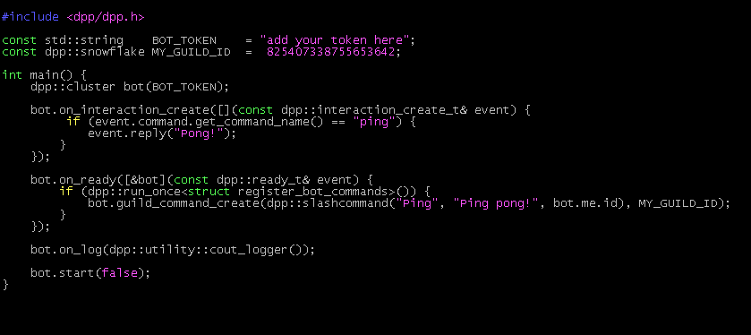
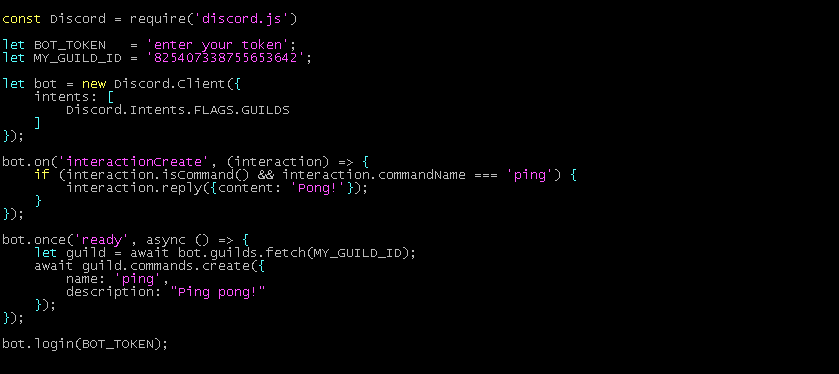

|
D++ (DPP)
A Lightweight C++ library for Discord
|


|
|
D++ (DPP)
A Lightweight C++ library for Discord
|
|
In this example we will create a C++ version of the discord.js example program.
The two programs can be seen side by side below:
| C++/DPP | JavaScript/Discord.js |
|---|---|

|

|
Let's break this program down step by step:
Make sure to include the header file for the D++ library with the instruction #include <dpp/dpp.h>!
To make use of the library you must create a dpp::cluster object. This object is the main object in your program like the Discord.Client object in Discord.js.
You can instantiate this class as shown below. Remember to put your bot token in the code where it says "token"!
To have a bot that does something, you should attach to some events. Let's start by attaching to the on_ready event (dpp::cluster::on_ready) which will notify your program when the bot is connected:
If you want to receive messages, you should also attach your program to the on_message_create event (dpp::cluster::on_message_create) which is the same as the Discord.js message event. You add this to your program after the on_ready event:
Attaching to an event is a good start, but to make a bot you should actually put some program code into the events. Lets add some simple things into the events. We will add some code to the on_ready event to output the bot's nickname (dpp::cluster::me) and some code into the on_message_create to look for messages that are the text !ping and reply with !pong:
Let's break down the code in the on_message_create event so that we can discuss what it is doing:
This code is simply comparing the message content event.msg->content (dpp::message_create_t::content) against the value in a constant string value "!ping". If they match, then the message_create function is called.
The message_create function (dpp::cluster::message_create) sends a message. There are many ways to call this function to send embed messages, upload files, and more, but for this simple demonstration we will just send some message text. The message_create function accepts a dpp::message object, which we create using two parameters:
event.msg->channel_id (dpp::message_create_t::channel_id)"Pong!".To make the bot start, we must call the cluster::start method, e.g. in our program by using bot.start(false).
The parameter which we set to false indicates if the function should return once all shards are created. Passing false here tells the program you do not need to do anything once bot.start is called, so the return statement directly afterwards is never reached:
Compile your bot using cmake .. and make from the build directory, and run it with ./test - Congratulations, you now have a working bot written using the D++ library!